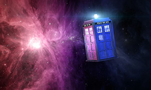

Doctor Who is a British science-fiction television programme produced by the BBC. The programme depicts the adventures of the Doctor, a Time Lord—a time-travelling humanoid alien. He explores the universe in his TARDIS, a sentient time-travelling space ship. Its exterior appears as a blue British police box, which was a common sight in Britain in 1963 when the series first aired. Along with a succession of companions, the Doctor faces a variety of foes while working to save civilisations, help ordinary people, and right wrongs.
The character of the Doctor was initially shrouded in mystery. All that was known about him in the programme's early days was that he was an eccentric alien traveller of great intelligence who battled injustice while exploring time and space in an unreliable time machine, the "TARDIS" (an acronym for Time And Relative Dimension(s) In Space), which notably appears much larger on the inside than on the outside (a quality referred to as "dimensional transcendentality").
Source: All your Doctor Who info Here